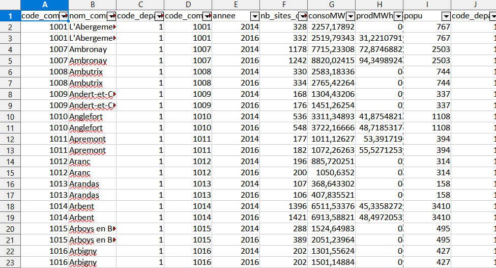

Un SGBD(Système de Gestion de Base de Données) est un ensemble de logiciel qui permet de créer et manipuler plusieurs tables.
À partir d’un tableau de données transmis sur excel:

Nous devons les transférer sur un logiciel contrôler par l'université appelé phppgadmin
et écrire des requêtes à partir du langage SQL pour sélectionner uniquement les données qui nous intéressent(il y avait des régions différents pour chaque élève.
Voici la requête :
SELECT *
FROM elec.communes as c INNER JOIN elec.conso_prod_et_popu as co ON c.code_commune = co.code_commune
INNER JOIN elec.departements AS d ON c.code_departement = d.code_departement
INNER JOIN elec.regions as reg ON d.code_region = reg.code_region
WHERE (co.annee = '2014' OR co.annee = '2016') AND (reg.nom_region = 'Auvergne-Rhône-Alpes' OR reg.nom_region = 'Pays de la Loire')
;
Permet de sélectionner les données de consommations d’électricité des régions Auvergnes-Rhône-Alpes et Pays de la Loire en 2014 et 2016.
Avec les graphiques et résultats des requêtes, j’en ai conclu que la consommation d’électricité était différente et non proportionnels pour chaque département. Ce qui n’est pas étonnant étant donné que chaque département a son propre environnement.